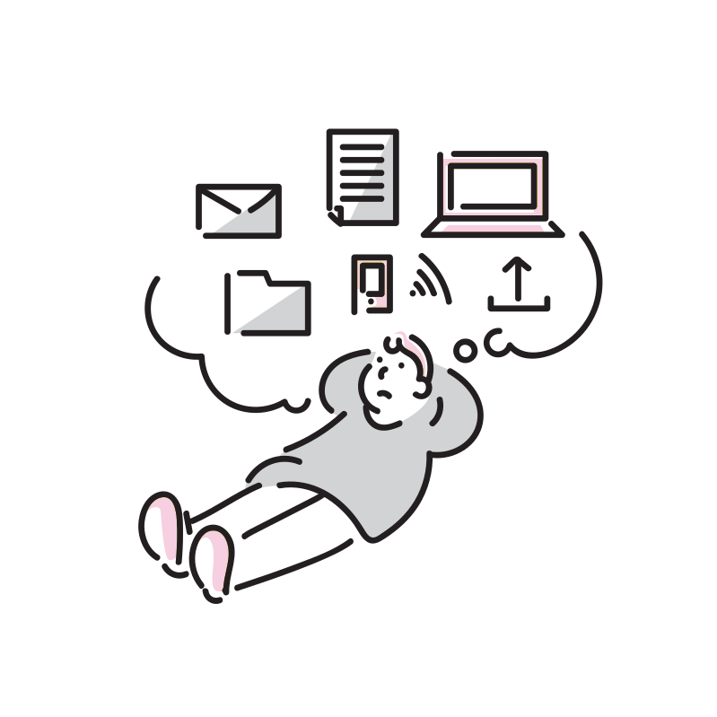
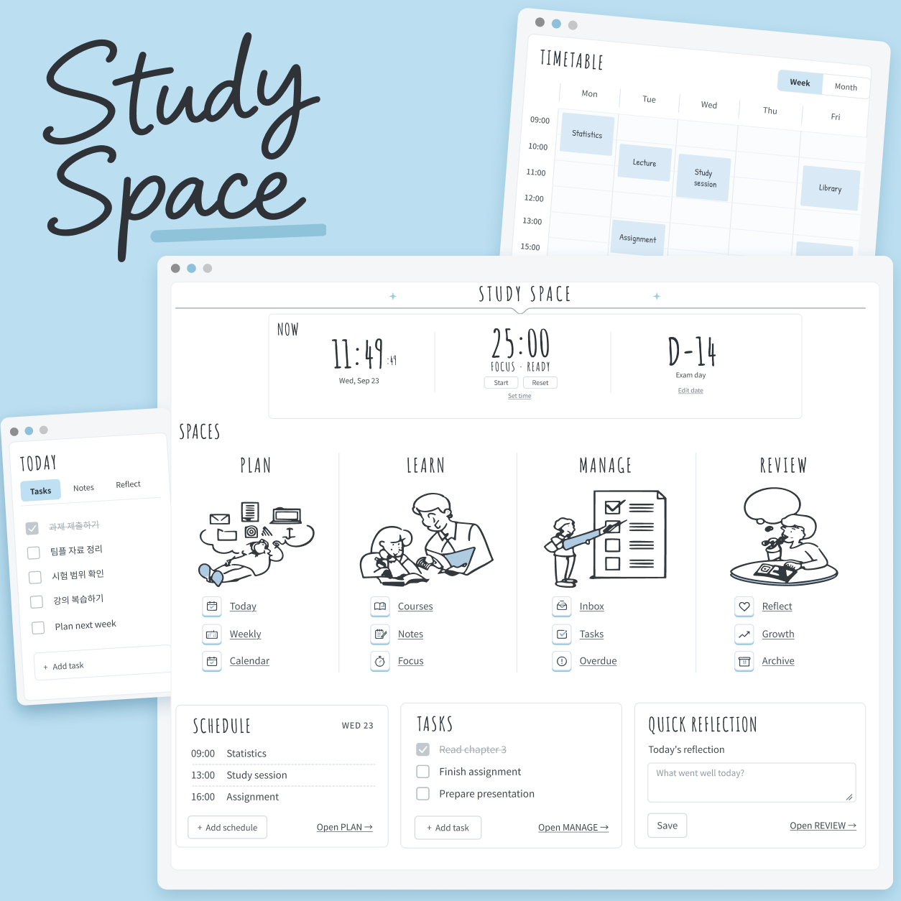
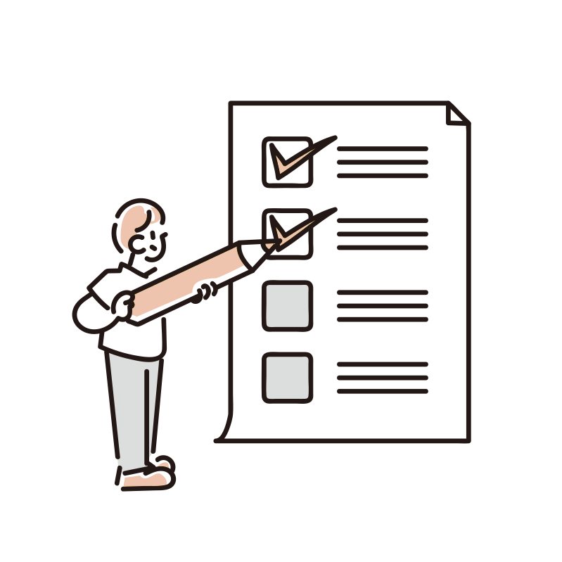
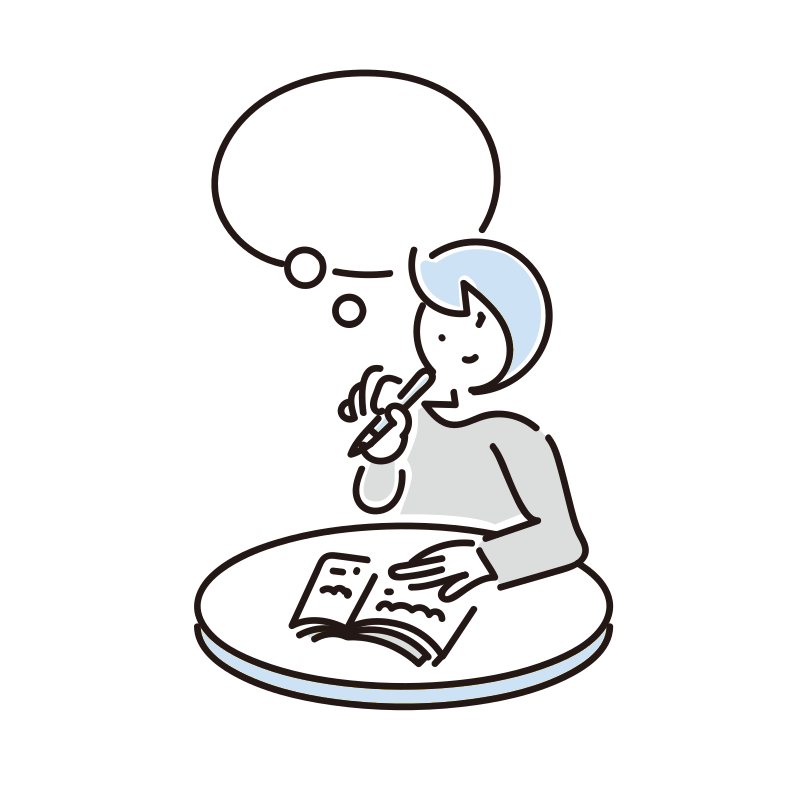

01PLAN

하루에 방향을 더해요.
오늘의 할 일부터 주간 시간표와 캘린더까지. 하고 싶은 일을 내가 쓸 수 있는 시간 안에 놓아보세요.
NOTION STUDY WORKSPACE
오늘의 계획부터 차곡차곡 쌓이는 기록까지.
흩어진 공부를 연결하는 나의 작은 학습 공간,
Study Space.
REMO가 만들고 있는 노션 기반 학습 공간입니다.

A LITTLE LESS SCATTERED
시간표는 여기, 과제는 저기.
공부한 내용을 다시 찾다가 집중이 흐트러지기도 하고요.
Study Space는 계획·학습·작업·회고를 네 개의 공간으로 나눕니다. 지금 필요한 것부터 펼치고, 하루의 공부를 자연스럽게 이어갈 수 있도록요.
더 많은 일을 채우기보다, 내가 할 일을 선명하게.
FOUR SPACES, ONE ROUTINE
오늘을 계획하고, 배움을 기록하고.
완료한 일과 작은 변화까지 놓치지 않도록.

오늘의 할 일부터 주간 시간표와 캘린더까지. 하고 싶은 일을 내가 쓸 수 있는 시간 안에 놓아보세요.
강의와 노트를 한 흐름으로 정리하는 공간. 집중 타이머로 지금 시작할 공부에 작은 경계를 만들어보세요.

문득 떠오른 일, 진행 중인 과제, 놓친 마감까지. 해야 할 일의 위치가 보이면 다음 행동도 선명해져요.

오늘 잘된 일과 다음에 바꾸고 싶은 일을 기록하는 공간. 공부의 결과만큼 나의 과정도 소중하게 남겨요.
네 공간은 제품의 구성 방향입니다. 세부 기능의 현재 개발 상태는 아래에서 확인할 수 있어요.
A GLIMPSE OF YOUR DAY
가볍게 체크해 보고, 하루의 흐름을 살펴보세요.
아래 내용은 기능을 소개하기 위한 예시입니다.
시간표와 작업 목록을 함께 살펴보고, 완료한 일이 얼마나 쌓였는지 확인하는 경험을 준비하고 있어요.
오늘의 할 일
체크 상태는 이 화면에서만 바뀌며 저장되거나 전송되지 않습니다.
MAKE ROOM FOR FOCUS
현재 시각, 집중 타이머, 중요한 날까지 남은 시간.
NOW는 공부를 시작하는 순간을 위한 위젯입니다.
NOW
GROWING, STEP BY STEP
현재는 디자인과 기능을 다듬는 단계입니다.
완성된 기능과 준비 중인 내용을 함께 안내합니다.
이 페이지는 프로젝트 소개용입니다. 노션 템플릿 배포와 구매는 준비 중이며, 아래에서 출시 알림을 신청할 수 있습니다.
BE THE FIRST TO KNOW
이메일을 남겨주시면 템플릿을 공개할 때 알려드릴게요.
나의 공부를 담을 새로운 공간을 먼저 만나보세요.
출시 일정과 가격은 아직 정해지지 않았어요.
사전예약은 구매나 이용 권한을 보장하지 않는 출시 알림 신청입니다.
아래 버튼을 누르면 이 취소 링크에 연결된 신청과 이메일이 삭제됩니다.
처음 신청한 경우 아래 링크로 취소할 수 있어요. 이미 신청한 이메일이라면 처음 접수할 때 받은 취소 링크를 사용해 주세요. 이 링크는 다른 사람에게 공유하지 마세요.
YOUR PACE, YOUR SPACE.